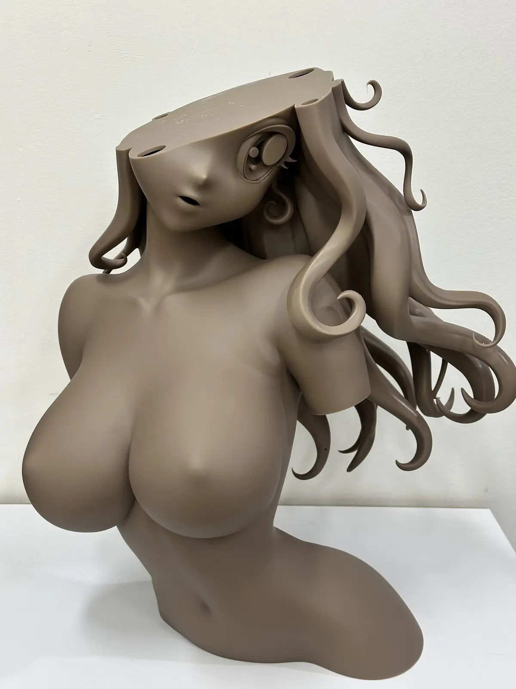
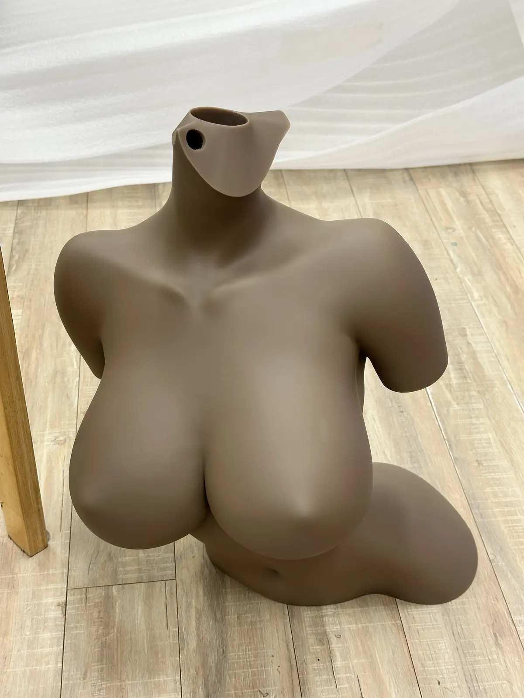
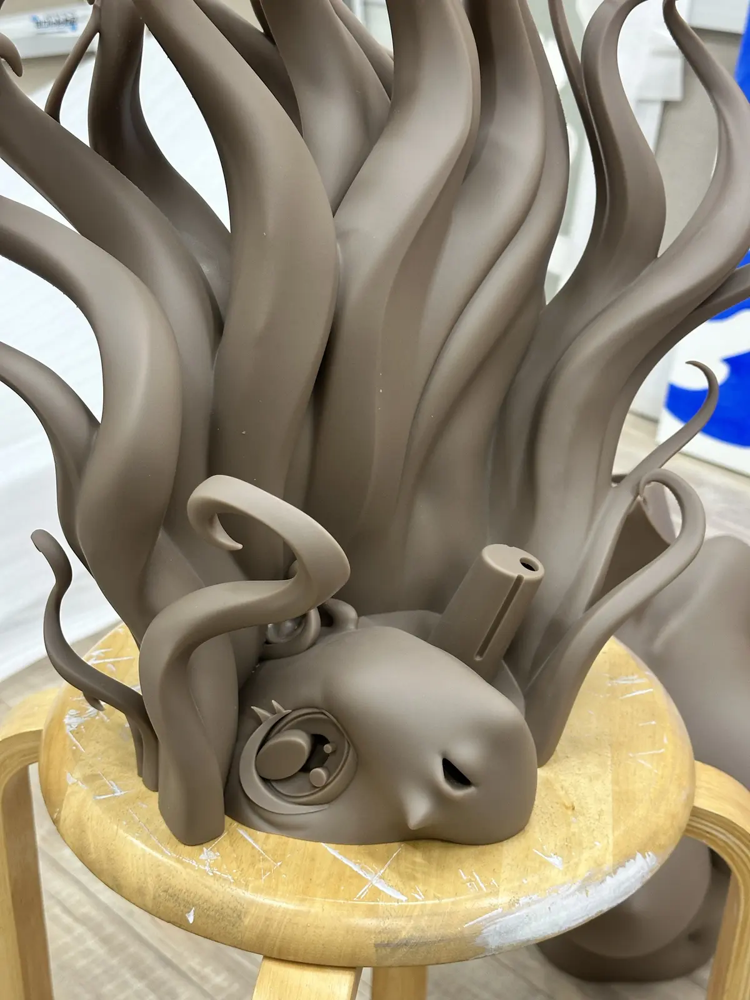
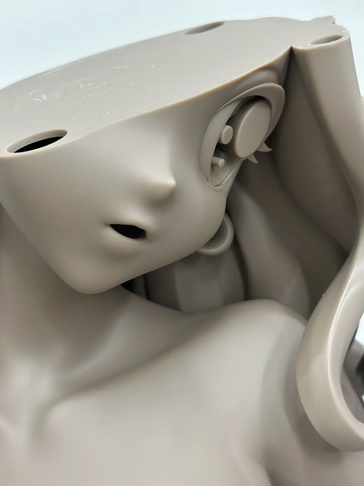

Studio UpdateNovember 26, 2026
Torso Sculpture 01 (50 cm, White)
In progress · Painted 3D-printed resin
The 3D printing studio has completed the print, and it has arrived safely at my studio. Next, I will fill the holes, refine the surface, and paint the sculpture. I will post an update here once it is finished and ready to ship.
- 3D printingCompleted
- Filling holes and refining the surfaceNext
- PaintingUpcoming
- Shipping crate and foam insertsTesting samples
- Packing and shippingUpcoming




Packaging
Alongside the sculpture, I have ordered the shipping crate and the custom foam inserts. The samples have arrived, and I am now testing them.
This page is shared privately with collectors of this edition. Questions are always welcome at reyunsung@gmail.com.